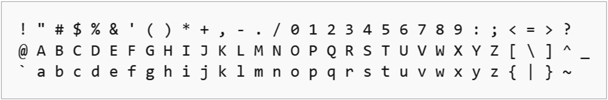

Todas las transcripciones paleográficas realizadas por los colaboradores del Hispanic Seminary of Medieval Studies (HSMS) siguen el método establecido en 1977 por David Mackenzie y Kenneth Buelow en A Manual of Manuscript Transcription for the Dictionary of the Old Spanish Language, cuyo propósito inicial fue fijar las normas de transcripción utilizadas por el Dictionary of the Old Spanish Language. Según estas normas, el texto se transcribe línea por línea, respetando la disposición del texto en la página y cada uno de sus elementos (cabeceras, columnas, rúbricas, glosas, miniaturas, etc.), manteniendo la ortografía del texto y el sistema de abreviaturas, e identificando las intervenciones (adiciones y supresiones) de copistas, correctores y editores. Para ello se emplea una serie de etiquetas o mnemónicos,
La tecnología informática existente cuando se desarrollaron los programas utilizados en la elaboración del Dictionary of the Old Spanish Language impuso dos limitaciones importantes que condicionaron el formato de las transcripciones: el juego de caracteres disponible y el lenguaje de marcado. El juego de caracteres existente era US-ASCII, basado en el alfabeto latino, tal como se usa en inglés moderno, y que unicamente cuenta con 128 caracteres disponibles, 32 de ellos no imprimibles, con lo que en realidad solo pueden ser utilizados los siguientes 95 caracteres:

En consecuencia, las limitaciones de US-ASCII obligaron a utilizar soluciones creativas para representar de la forma más fiel posible la variada ortografía de los textos medievales:
Por lo que se refiere al lenguaje de marcado con el que se codifican las etiquetas, que siempre aparecen encerradas entre { }, se trata de una adaptación del IBM Generalized Markup Language (GML), que, al contrario que los lenguajes de marcado modernos (HTML o XML), solo diferenciaba las etiquetas de apertura, utilizando } para cerrar todas ellas.
En el año 2015, cuando se comenzó a diseñar el Old Spanish Textual Archive, el HSMS contaba ya con unas 300 transcripciones (más de 20 millones de palabras) hechas siguiendo estas normas, lo que llevó a plantear dos opciones: retranscribir todos los textos con unas nuevas normas, TEI , y utilizar juegos de caracteres más amplios, Unicode, o desarrollar un sistema que permitiera la utilización de las transcripciones originales, adaptándolas a un formato moderno que permitiera su manipulación con nuevas herramientas. Afortunadamente, la sistematicidad del método de transcripción facilitó la creación de una serie de scripts para verter las transcripciones a un formato actualizado y menos limitado. De esta forma fue posible convertir los textos originales US-ASCII/GML a Unicode/XML.
Las siguientes tablas catalogan todas las etiquetas del HSMS, que siguen siendo empleadas hoy en día en la transcripción paleográfica de nuevos textos, el equivalente en XLM/Unicode utilizado en los ficheros TEXT.SIGLA.vrt.html, y una breve explicación de su significado.
| HSMS | XML | significado |
|---|---|---|
| [fol. ] | <folio> </folio> | folio, hoja de un libro o cuaderno, consta de recto y vuelto: [fol. 7r], [fol. 7v] |
| {HD.} | <HD> </HD> | encabezamiento, título corrido situado en la parte superior del folio: {HD. LEVITICUS} |
| {CB1.} | <CB1> </CB1> | folio dispuesto a una columna |
| {CB2.} | <CB2> </CB2> | folio dispuesto a dos columnas |
| {RUB. } | <RUB> </RUB> | rúbrica, epígrafe o titulo que precede a una sección textual |
| {IN3.} | <IN3> </IN3> | inicial, el numeral indica las líneas de texto que abarca: {IN3.} Esos |
| {CW. } | <CW> </CW> | reclamo, palabra o sílaba que solía ponerse al fin de cada plana, y era la misma con que había de empezar la plana siguiente |
| {SG. } | <SG> </SG> | signatura, señal que con las letras del alfabeto o con números se pone al pie de las primeras planas de los pliegos o cuadernos |
| {ILL.} | <ILL> </ILL> | iluminación, elemento puramente ornamental que no tiene contenido significativo, ya sea textual o pictórico |
| {=ILL.} | <LMIN> </LMIN> | relación con el texto que le precede |
| {ILL=.} | <RMIN> </RMIN> | relación con el texto que le sigue |
| {=ILL=.} | <CMIN> </CMIN> | relación con el texto que le rodea |
| {MIN.} | <MIN> </MIN> | miniatura, elemento con contenido pictórico que, por lo general, ilustra el texto que la acompaña |
| {=MIN.} | <LMIN> </LMIN> | relación con el texto que le precede |
| {MIN=.} | <RMIN> </RMIN> | relación con el texto que le sigue |
| {=MIN=.} | <CMIN> </CMIN> | relación con el texto que le rodea |
| {DIAG.} | <DIAG> </DIAG> | diagrama, elemento con contenido gráfico que busca complementar el texto escrito |
| {=DIAG.} | <LMIN> </LMIN> | relación con el texto que le precede |
| {DIAG=.} | <RMIN> </RMIN> | relación con el texto que le sigue |
| {=DIAG=.} | <CMIN> </CMIN> | relación con el texto que le rodea |
| {GL. } | <GL> </GL> | glosa, explicación de un término o pasaje en el texto |
| {AD. } | <AD> </AD> | adición, expansión de los copistas del contenido del texto original, agregado después de que se completó el original |
| {SYMB.} | <SYMB> </SYMB> | símbolo que no se puede transcribir directamente |
| {BLNK.} | <BLNK> </BLNK> | espacio en blanco, área destinada a texto se dejó en blanco en un manuscrito |
| {RMK: .} | <RMK> </RMK> | breve comentario editorial sobre una característica física o textual: {RMK: folio has been cut.} |
| HSMS | XML | significado |
|---|---|---|
| [ ] | <EDITADD> </EDITADD> | inserción editorial: enel ascen[den]te |
| < > | <ABB> </ABB> | expansión de la abreviatura de los copistas: q<ue>, cap<itu>lo, u<er>dad |
| << >> | <SUP> </SUP> | encierra los caracteres volados parte de una abreviatura: q<u><<i>>en, q<u><<a>>les |
| ( ) | <EDITDEL> </EDITDEL> | supresión editorial: pugnicion de (de) dios |
| [^ ] | <COPADD> </COPADD> | inserción del copista: & [^a]matala en, otra [^ma]nera |
| [^#2 ] | <COPADD2> </COPADD2> | inserción en una mano no original: en la [^2#segu<n>d<a>] casa |
| (^ ) | <COPDEL> </COPDEL> | supresión del copista: uini(^ni)eron, ymagen(^es) |
| (^#2 ) | <COPDEL2> </COPDEL2> | supresión en una mano no original: los cauall(^2#eros)[^2#os] |
| HSMS | XML | significado |
|---|---|---|
| {ARB.} | <ARB> </ARB> | árabe |
| {ARG.} | <ARG> </ARG> | aragonés (no se utiliza para textos escritos en aragonés) |
| {ARM.} | <ARM> </ARM> | arameo |
| {BAS.} | <BAS> </BAS> | vasco |
| {CAT.} | <CAT> </CAT> | catalán |
| {ENG.} | <ENG> </ENG> | inglés |
| {FRN.} | <FRN> </FRN> | francés |
| {GAL.} | <GAL> </GAL> | gallego |
| {GER.} | <GER> </GER> | alemán |
| {GRK.} | <GRK> </GRK> | griego |
| {HEB.} | <HEB> </HEB> | hebreo |
| {ITL.} | <ITL> </ITL> | italiano |
| {LAM.} | <LAM> </LAM> | lenguas americanas |
| {LAT.} | <LAT> </LAT> | latín |
| {PRT.} | <PRT> </PRT> | portugués |
| HSMS | Unicode | significado |
|---|---|---|
| \ | \ | precede a la antigua notación en folio incluida en el encabezado: {HD. Prologo. \ 3} |
| * | * | marca la reconstrucción de texto ilegible: [*d]esde cabo |
| $ | $ | indica que el carácter (tipo) que le sigue se ha eliminado editorialmente porque aparece invertido en el texto: ($h)[h]onrra perdida |
| [??] | ?? | denota la presencia en el manuscrito de parte de una palabra que es ilegible: fueron a po[??] & |
| [??] | ?? | rodeado por un solo espacio denota que una palabra completa es ilegible: estrellas [??] |
| [???] | ??? | denota la ilegibilidad de una frase, la combinación de dos o más palabras ilegibles completas: [?? ???] quisieres obrar conestas estrellas [??] |
| | | | | denota divisiones físicas que separan segmentos de texto (en un diagrama, etc.) |
| [+] | se utiliza para vincular un prefijo a su base léxica cuando se escriben por separado en el texto: en[+]comjenda |
|
| + | + | se utiliza cuando se interrumpe el flujo de lectura lógica del texto contenido en una etiqueta |
| (( )) | ≺ ≻ | paréntesis dobles, representan los paréntesis que aparecen en el texto: E ((lo q<ue> es peior)) muy aparejado a dar |
| % | ¶ | calderón, utilizado para indicar divisiones de texto |
| %2 | ⇑ | calderón dos, el texto que le sigue hasta el final de la línea constituye la parte final de la línea anterior |
| %3 | ⇓ | calderón tres, el texto que le sigue hasta el final de la línea constituye la parte final de la línea siguiente |
| HSMS | Unicode | significado |
|---|---|---|
| c' | ç | |
| n~ | ñ | |
| h~ | ħ | |
| t' | ţ | |
| x~ | ẍ | |
| s' | σ | |
| S' | Σ | |
| z' | ϛ | |
| Z' | Ϛ | |
| & | & | nota tironiana |
| &' | ⅋ | nota tironiana mayúscula |
| a@' e@' i@' o@' u@' |
á é í ó ú |
indica la presencia de un acento agudo |
| a@` e@` i@` o@` u@` |
à è ì ò ù |
indica la presencia de un acento grave |
| a@^ e@^ i@^ o@^ u@^ |
â ê î ô û |
indica la presencia de un acento circumflejo |